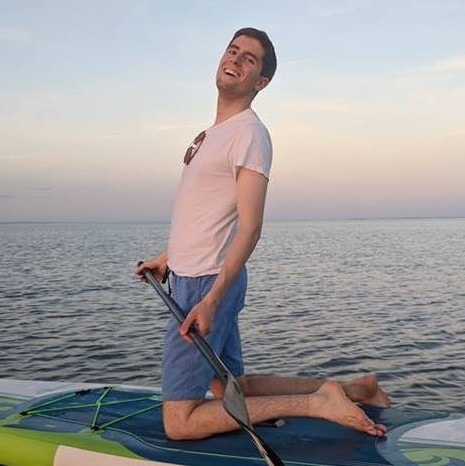

Role: Pipeline and Web Development
I am currently a graduate student at the Université de Montréal studying Extra-Galactic Astrophysics.
My wife, Catherine, and I live in the old port of Montréal with our two adorable cats (plenty of photos to come!).
We love skating and strolling around historic Montréal. In addition to studying Astronomy at UdeM (l'Université de Montréal), I study French and Russian.
You can reach me at: carterrhea@astro.umontreal.ca
More information can be found at my personal site: crhea93.github.io

Role: Web Development
I am studying Solar Physics as a graduate student at Université de Montréal. Most of my work revolves around numerical simulations of the coronal magnetic field as a tool for solar flare forecasting.
With a background in classical music at Université de Moncton, I also enjoy performing concerts such as blues drumming, classical marimba and iranian santour.
I speak French and English, and currently studying Spanish and Italian.
you can reach me at: ChristianThibeaultNB@gmail.com